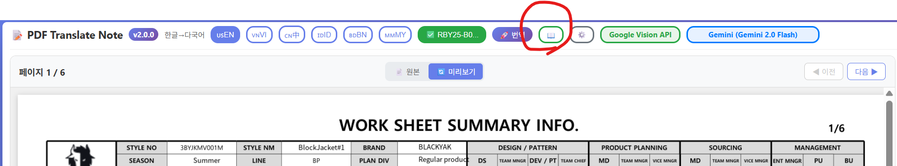
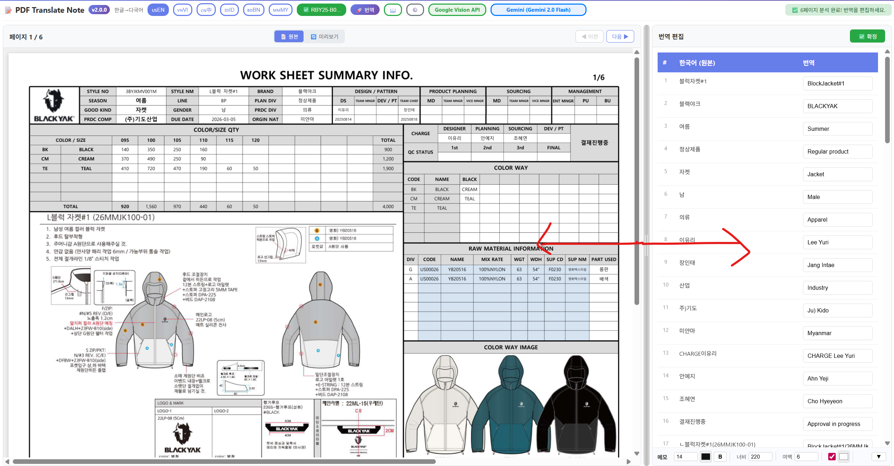

📄 PDF Translator
의류 기술 문서 자동 번역 서비스 사용자 매뉴얼
🌐 서비스 접속 정보
URL: https://pdf-translator-970612911654.asia-northeast3.run.app
지원 언어: 영어, 베트남어, 중국어, 인도네시아어, 벵골어
기본 설정: Google Vision OCR + Gemini 2.0 Flash
1. 로그인하기 🔐
서비스를 이용하려면 먼저 로그인해야 합니다. 아래 단계를 따라주세요.
1 웹 브라우저에서 서비스 URL에 접속합니다.
2 로그인 화면이 나타나면 아이디와 비밀번호를 입력합니다.
3 로그인 버튼을 클릭합니다.
아이디:
sije_sam비밀번호:
sije_sam
2. PDF 번역하기 📝
2.1 파일 업로드
로그인 후 메인 화면에서 번역할 PDF 파일을 업로드합니다.

▲ 파일 선택 화면 - "파일을 선택하세요" 영역을 클릭하여 PDF 업로드
1 화면 중앙의 📁 파일을 선택하세요 영역을 클릭합니다.
2 컴퓨터에서 번역할 PDF 파일을 선택합니다.
3 파일이 업로드되면 자동으로 OCR이 시작됩니다.
2.2 상단 메뉴 설명
▲ 상단 메뉴바 - 언어 선택, 파일 선택, 번역, OCR/AI 엔진 설정
| 버튼 | 설명 |
|---|---|
| usEN, vnVI, cn中... | 번역 대상 언어 선택 (영어, 베트남어, 중국어 등) |
| 📁 파일선택 | 번역할 PDF 파일 업로드 |
| 🌐 번역 | 번역 시작 버튼 |
| 📖 | 용어 사전 열기 |
| Google Vision API | OCR 엔진 (텍스트 인식) |
| Gemini 2.0 Flash | AI 번역 엔진 |
2.3 번역 실행
1 대상 언어(예: usEN 영어)를 선택합니다.
2 🌐 번역 버튼을 클릭합니다.
3 진행 상황이 화면에 표시됩니다.
4 번역이 완료되면 결과가 자동으로 표시됩니다.
3. 번역 결과 확인하기 👀
▲ 번역 결과 화면 - 왼쪽: 번역된 이미지, 오른쪽: 번역 편집 패널
3.1 화면 구성
- 왼쪽 영역: 번역된 PDF 이미지 (미리보기)
- 오른쪽 패널: 번역 편집 - 한국어(원본)와 번역 결과 목록
- 상단: 페이지 탐색 (◀ 이전 / 다음 ▶)
3.2 텍스트 수정하기
번역 결과가 마음에 들지 않으면 오른쪽 패널에서 직접 수정할 수 있습니다.
1 오른쪽 번역 편집 패널에서 수정할 항목을 찾습니다.
2 번역 텍스트 입력란을 클릭하여 새 번역을 입력합니다.
3 상단의 ✅ 확정 버튼을 클릭하여 저장합니다.
4. 메모 추가하기 ✏️
번역된 이미지에 추가 설명이나 메모를 넣을 수 있습니다.

▲ 메모 추가 기능 - 우클릭으로 메모 추가, 화살표로 연결
4.1 메모 추가 방법
1 메모를 추가할 위치에서 마우스 우클릭합니다.
2 메모 추가 (화살표) 메뉴를 선택합니다.
3 메모 내용을 입력합니다.
4 저장 버튼을 클릭합니다.
메모 하단에서 다음 옵션을 조정할 수 있습니다:
- 메모: 글꼴 크기 (기본 14)
- 색상: 텍스트 색상
- 너비: 메모 박스 너비 (기본 220)
- 여백: 내부 여백 (기본 6)
4.2 화살표 연결
메모와 특정 위치를 화살표로 연결하여 가리키는 대상을 명확히 할 수 있습니다.
5. 결과 다운로드하기 📥
5.1 미리보기 / 원본 전환
- 📋 원본: 원본 이미지 보기
- 👁 미리보기: 번역된 결과 미리보기
5.2 다운로드
- 각 페이지 하단의 다운로드 버튼으로 개별 다운로드
- PNG 이미지 파일로 저장됩니다
6. 용어 사전 관리하기 📖
자주 사용하는 의류 전문 용어를 사전에 등록하면 일관된 번역 결과를 얻을 수 있습니다.
6.1 사전 열기
상단 메뉴의 📖 버튼을 클릭하여 용어 사전을 엽니다.
6.2 용어 추가하기
방법 1: 직접 입력
1 한글 용어를 입력합니다. (예: 겉감)
2 영어 번역을 입력합니다. (예: Shell Fabric)
3 추가 버튼을 클릭합니다.
방법 2: AI 자동 추가 (추천) 🤖
자연어로 입력하면 AI가 자동으로 파싱합니다.
예시: "겉감을 영어로 shell fabric으로 추가해줘"
7. 로그아웃하기 🚪
작업이 끝나면 보안을 위해 로그아웃하세요.
화면 우측 상단의 로그아웃 버튼을 클릭합니다.
8. 문제 해결 🔧
| 문제 | 원인 | 해결 방법 |
|---|---|---|
| 번역이 되지 않아요 | API 연결 문제 | 페이지를 새로고침하고 다시 시도하세요 |
| 한글이 깨져 보여요 | 폰트 문제 | 관리자에게 문의하세요 |
| 번역 속도가 느려요 | 페이지가 많거나 서버 부하 | 잠시 후 다시 시도하세요 |
| 로그인이 안 돼요 | 잘못된 계정 정보 | 아이디/비밀번호를 확인하세요 |